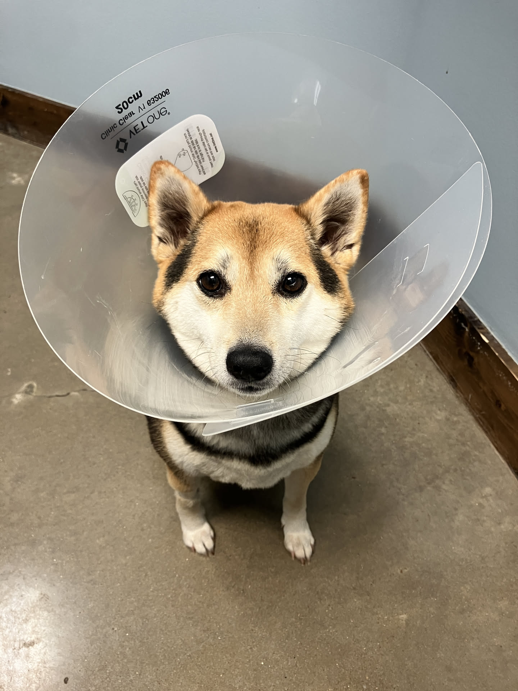

1game1week - Week 13 (4/4/26) - Umineko When They Cry - Chapter 1: Legend of the Golden Witch
Hey all! It's Week 13! We're finally caught up! Thanks for bearing with me. I can't promise this won't happen again next week. This week's been a bit hectic. Recently, my dog had an... incredibly long heat cycle, which had been worrying me. I ended up taking her to the vet and it turns out she had an ovarian cyst, which required for her to be spayed, pretty much. It was quite a sudden large expense... if you have pets and haven't looked into pet insurance, I would heavily advise you do. It was able to take quite a burden off of my shoulders. It's not like they paid the entire amount. Actually, about half of what they paid went into my deductible... but it still helped a bunch. I'm mostly just happy that my dog has been in good spirits. She's actually learned to use her cone as a weapon to push me around and hit me.
Also, I've finished paying off my student loans. I'm free! ...So I would say, if I didn't have credit card debt, but it's fine. Not having to pay an extra 700 / month (I way overpaid) towards student loans will make pretty much everything a cinch. I've been considering a few things. Almost been thinking I should get a new car. But then I remembered how much I hated modern cars and thought I was lucky because I like my current car. So... once I'm done paying off credit cards, my funds will very likely go into savings for going to Japan next year. I would love to visit Shirakawa-go in particular during June and see if I can catch a summer festival. Anyways!New games from 3/26 -> 4/1: - Sonic Racing: Crossworlds (Switch 2)
As of 4/2, my yearly backlog was at -14 (lower is better, -+0 since last week). And onto 1g1w. A game is considered "beaten" if I've accomplished the main objective of the game, regardless of how many routes / endings I've achieved. However, it's preferable to get all endings if possible! GAME(S): Umineko When They Cry - Chapter 1: Legend of the Golden Witch PLATFORM: PC (Steam Deck) GENRE: Visual Novel STARTED ON: 10/4/2025 BEATEN ON: 3/17/2026 TOTAL PLAYTIME: 20h42m (Tracked via Steam) It's been almost a year since I finished reading Higurashi. It was one of those unforgettable experiences in life, and something that will likely stick with me for a good, long time. Umineko, which is the third (and fourth) entry in the When They Cry series, was something I always knew I'd be getting to at some point, but kept putting off. Actually, it'd be a little appropriate to say that I've been putting it off nearly for a decade, because I bought the Question Arcs back in 2017. I've mentioned this story before, but there was a cute girl I had a crush on back in high school. One day, I saw she was watching Danganronpa (I assume more accurately, she was just reading it) on YouTube. I talked to her a little and asked if she had a favorite anime. She replied, "Umineko no Naku Koro Ni". I honestly didn't even understand what she was saying, but I was a high school boy, so I started reading a little... of course, I was a high school boy, so I thought, "reading is lame" and stopped before the airport scene ended. Holy crap dude. I've been kicking my own ass for a long time about it. What an incredibly phenomenal novel. This post is not going to go over any story details. I think it is just one of those things people have to experience for themselves, because there is no way that any summary can accurately do justice to this fantastic 20 hour visual novel. I will, however, endlessly sing its praises. I'm legitimately stunned that people back in 2007, when it was released, were able to wait between Comikets to continue the story. I bet the message board discussions went legitimately crazy and I'm sad I'm too young to have been able to experience that (putting aside the whole language barrier). It's important to note, I think, that despite reading this for nearly 21 hours, I am barely 11% done with Umineko as a whole. It is an incredibly long novel. As a rough estimate, it is just about one million, one hundred twenty seven thousand words long. For a more "normal" comparison, the entirety of Umineko is longer, word-count wise, as the entire Harry Potter (1,084,170 words), and just about twice the length of the entirety of The Lord of the Rings + The Hobbit (550,147 words). So... I've got a long time to go, but I'm going to be chipping away at Umineko for the entire year. I'm incredibly excited for it. Because I don't have much to say, I'm going to mention two of the soundtrack... tracks, that I was a fan of for Episode 1. As a whole, the soundtrack is phenomenal as standalone pieces of music and are used to great effect to elevate the scenes they are put in. Firstly, goldenslaughterer. This is likely a common favorite track among everyone who read Umineko. Second, Rose. This song is the first you hear in the prologue scene, and I think it sets the tone incredibly well for not only what you see in the prologue, but how you should be feeling, overall, about the chapter. It's looming... foreboding. And there's an old man screaming "Beatrice!", so you know it's good. While I can't really speak about Umineko, mostly due to not wanting to unintentionally spoil anything to anyone who at some point in their lives will "get to it", just as I have, I really think it got off to a phenomenal start. Having read Higurashi- which was required reading after all- made it all the much better. I'm excited to get back into it soon. Thanks for reading! If you need to contact me for any reason, please feel free to email me at aru@hoshikawa-aru.com.